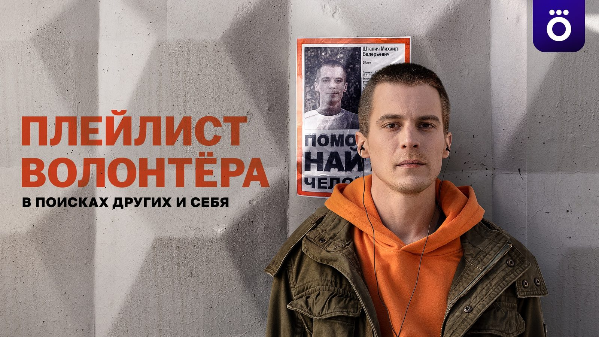

Max Kouznichenkov
MUSIC PARTNER
FOR BRANDS,
AGENCIES &
PRODUCTIONS.
Composer, Producer and Former Agency Executive. 20 years across advertising, branded content and screen productions, including a decade inside Leo Burnett, Saatchi & Saatchi and Grey.

01
MUSIC
PARTNER.
I compose and produce music for advertising, branded content and screen productions.
Over the past two decades, I’ve worked across original scores, electronic productions, vocal campaigns, sonic branding and large-scale music productions involving choirs, live musicians and custom recording sessions. My focus is creating music that feels distinctive, emotionally precise and crafted to elevate the idea behind the work.
Before founding REEF Audio, I spent ten years inside Leo Burnett, Saatchi & Saatchi and Grey, ultimately serving as Client Service Director. That experience shaped how I work today.
I understand how ideas are developed, how brands make decisions, and how creative, production and business priorities intersect. As a result, I often contribute beyond the music itself — helping teams navigate briefs, creative decisions and approvals throughout the process.
For many clients, I become not just a composer, but a trusted music partner involved from the earliest creative discussions through production and final delivery.
Commercial audio production projects are delivered through REEF Audio, a boutique audio production studio creating original music, sound design and sonic branding for brands, agencies and production companies.
02
FROM
BRIEF TO
FINAL MIX.
- Music Strategy & Creative Development
- Original Composition
- Sonic Branding
- Music Production & Supervision
- Talent Sourcing & Recording Production
- Film & TV Scoring
03
I KNOW
HOW
AGENCIES
WORK.
- 10 years inside agency teams
- Understanding of both creative and business objectives
- Faster approval cycles through strategic music development
- End-to-end management of the musical production process
- Access to REEF Audio’s network of composers, vocalists and musicians
04
TRUSTED
BY.
Brands
McDonald’s · Google · Toyota · Volkswagen · Coca-Cola · IKEA · Samsung · Sony · Xiaomi · KIA · Hyundai · Chevrolet · Haval · Burger King · KFC · Heinz · Snickers · KitKat · Nesquik · Lay’s · Fanta · Lipton · Danone · Kinder · Jacobs · Red Bull · Miller · Nivea · L’Oréal · Colgate · Oriflame · Visa · Marlboro · Nokia · Haier · Moulinex · AliExpress · Whole Foods · Tim Hortons · St Regis · HBO · BBC · Bayer · GSK · Kaspersky · Yango
Agencies
BBDO · TBWA · Publicis · McCann · Leo Burnett · Saatchi & Saatchi · Grey · Dentsu · Havas
05
AWARDED
WORK.
ORIGINALS+ — Best Original TV Series Score

06